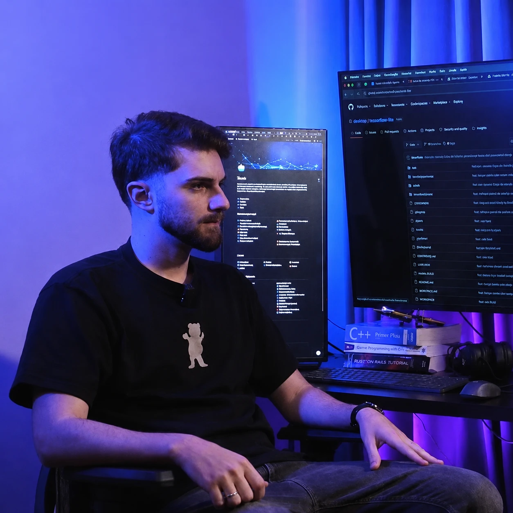

Branded marketplace: login OTP e OAuth
Login com OTP por e-mail e Google OAuth, header multi-tenant, listagem com filtros e brand slug dinâmico.
Software Engineer na Qeevo Group. Construo produtos full-stack com foco em pagamentos, multi-tenant e sistemas embarcáveis, do zero à produção.

Abr 2025 a abr 2026 · Qeevo Group
Gosto de assumir produtos do zero: arquitetura inicial, CI/CD, Docker, temas, testes e deploy.
Comecei a programar no ensino médio técnico em Desenvolvimento de Sistemas, na ETEC. Depois fui para a Fatec São José dos Campos, onde migrei para Banco de Dados para conciliar a faculdade com a primeira experiência profissional.
Passei pela APTIV, onde tive contato com VB, C#, SQL, React e Node. Hoje estou na Qeevo Group (ex-Quero Educação), trabalhando full-stack com Vue, Nuxt, Ruby, Node e Docker em AWS.
Atuei como tech lead de fato em dois produtos este ano: um gateway de pagamentos embarcável e uma área do aluno multi-tenant.
Fora do código: café, futebol e música.
Construção do zero de um gateway de pagamentos embarcável via iframe por parceiros externos. Renderização de oferta, fluxos de Cartão, PIX e Boleto, sistema de cupom, temas por marca, CI/CD e dockerização.
Produto novo com histórico de pagamentos, reembolso self-service, modal de pagamento com Cartão e PIX, validação de chave PIX e localização por tenant. Arquitetura inicial, setup e deploy sob minha responsabilidade.
Iniciativa em mais de 6 repositórios, coordenando times diferentes: solicitação com acompanhamento, workers com retry administrativo, reembolso via PIX com fallback automático por e-mail e painel de auditoria.
Login com OTP por e-mail e Google OAuth, header multi-tenant, listagem com filtros e brand slug dinâmico.
Cross-sell multi-oferta no pós-checkout, com controle de estado via cookies e rastreamento.
Controller de assinaturas PIX no monolito principal e modal de pagamento recorrente na área do aluno.
Projeto acadêmico full-stack em monorepo com submódulos: backend, frontend e pipeline ETL.
Atuação full-stack com foco em pagamentos, multi-tenant e produtos embarcáveis. Tech lead de dois produtos lançados do zero, com contribuições ao design system compartilhado da organização.
Desenvolvimento full-stack em produtos do marketplace de educação. Primeiro contato profissional com Nuxt, Ruby e AWS em escala de produção.
Desenvolvimento de ferramentas internas e automações de processos industriais, com integração a bancos SQL Server em produção.